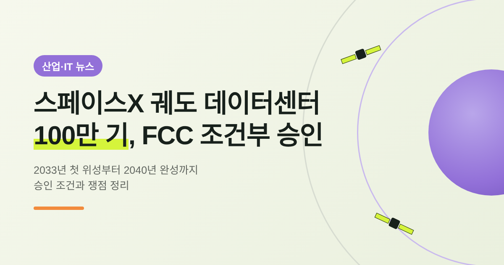
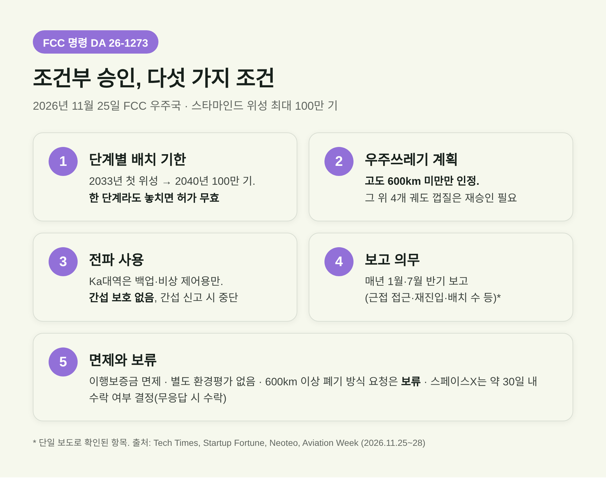
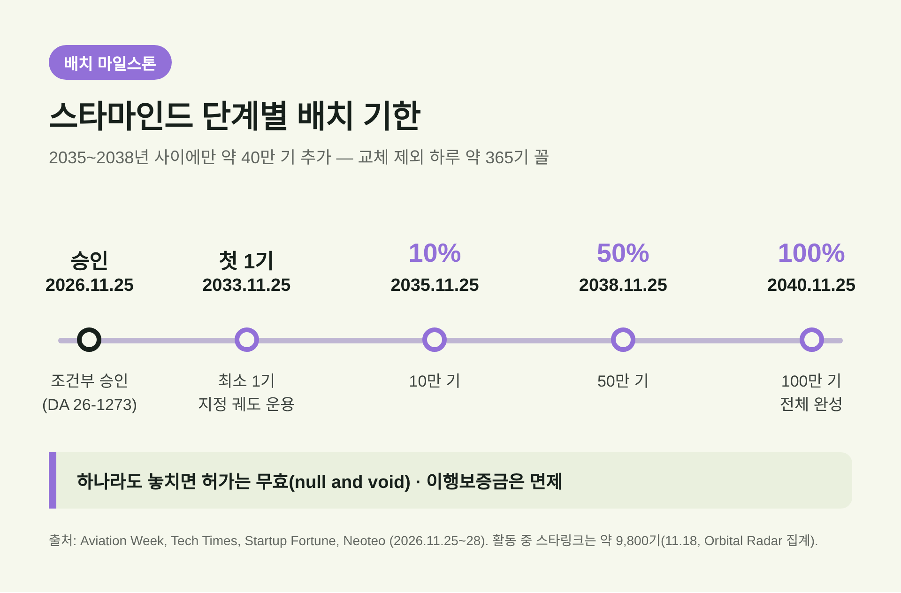
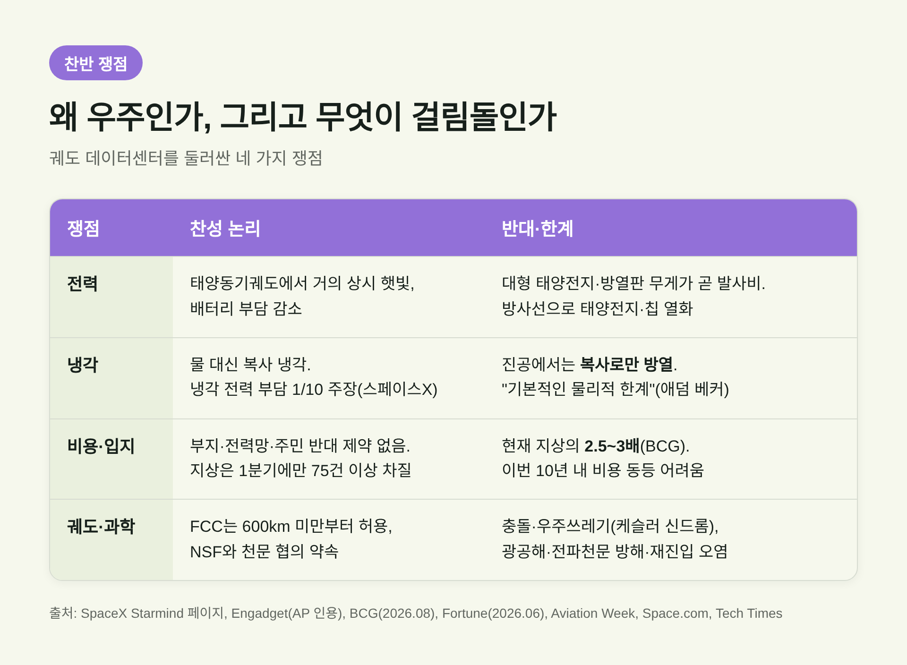
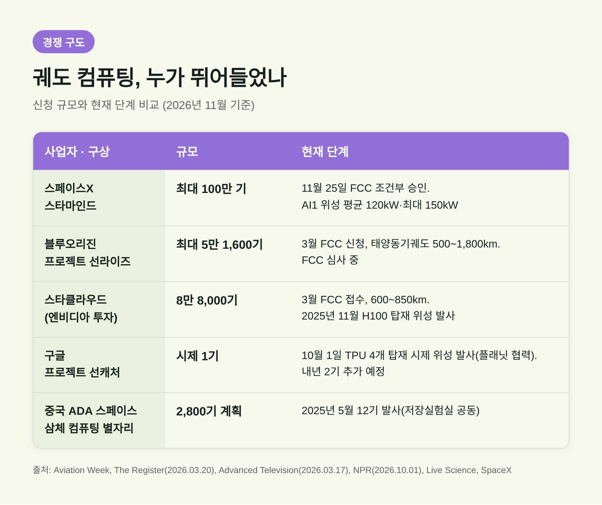
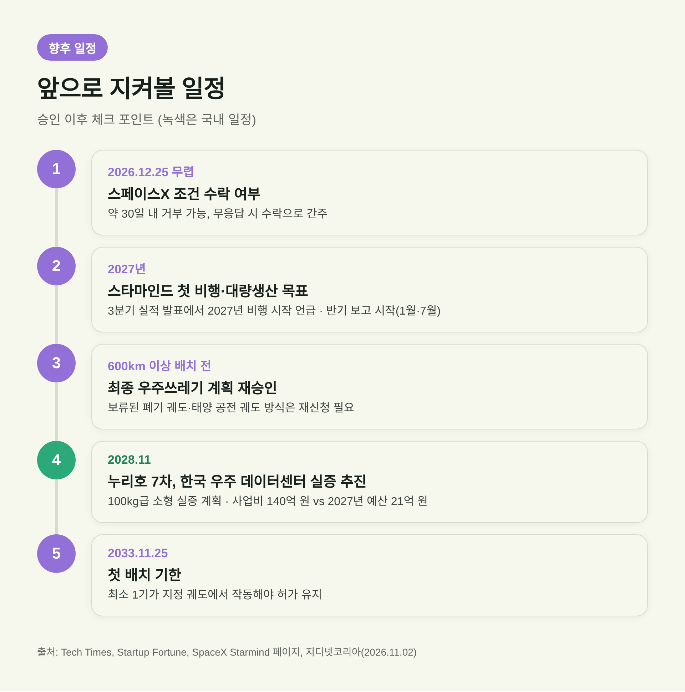

스페이스X 궤도 데이터센터 100만 기, 미 FCC가 조건부 승인했다

이번 글에서는 미국 연방통신위원회(FCC)가 스페이스X의 궤도 AI 데이터센터 위성 계획을 조건부로 승인한 소식을 정리해 보겠습니다. 승인 조건이 무엇인지, 왜 우주에 데이터센터를 띄우려 하는지, 그리고 넘어야 할 벽이 얼마나 높은지를 차례로 살펴봅니다.
세 줄 요약
- FCC 우주국은 11월 25일 명령 DA 26-1273으로 스페이스X의 '스타마인드(Starmind)' 위성 최대 100만 기를 조건부 승인했습니다.
- 2033년 첫 위성, 2035년 10만 기, 2038년 50만 기, 2040년 100만 기를 못 채우면 허가는 무효입니다. 우주쓰레기 계획은 고도 600km 아래만 인정됐습니다.
- 전력·냉각 부족을 우주 태양광으로 풀겠다는 구상이지만 방열, 발사비, 충돌 위험, 밤하늘 훼손 등 반론도 거셉니다.
■ 무슨 일이 있었나 — 11월 25일의 '조건부' 승인
FCC 우주국은 현지시간 11월 25일 스페이스X의 궤도 데이터센터 시스템을 승인하는 명령을 냈습니다. 서명은 우주국장 코트니 라인하드가 위임 권한으로 했습니다. 대상은 최대 100만 기의 저궤도 위성입니다. 스페이스X는 이 시스템을 '스타마인드'라고 부릅니다.
브렌던 카 FCC 위원장은 같은 날 X(옛 트위터)로 결정을 알렸습니다. FCC는 "역사상 처음으로 100만 기 위성 요청을 승인했다"고 표현했습니다. 카 위원장은 이번 조치가 미국의 성장을 뒷받침할 컴퓨팅 인프라의 "대담한 새 영역"을 연다고 평가했습니다. 일론 머스크는 "미국과 세계에 큰 자산이 될 것"이라고 답했습니다.
다만 '조건부'라는 단서가 핵심입니다. 일부 요청은 판단을 미뤘고, 높은 궤도로 올라가려면 추가 승인을 받아야 합니다. 스페이스X는 약 30일 안에 이 조건을 거부할 수 있습니다. 아무 답이 없으면 수락한 것으로 봅니다.
참고로 FCC 문서번호 DA 26-113은 이번 승인 문서가 아닙니다. 2월 4일 신청을 접수하고 의견을 받겠다고 알린 공고였습니다. 승인 명령 원문은 확인 시점에 열리지 않아, 아래 조건은 이 명령을 인용한 여러 보도를 교차 확인해 정리했습니다.
■ 승인 조건 다섯 가지 — 기한, 궤도, 쓰레기, 전파, 보고

첫째는 단계별 배치 기한입니다. 2033년 11월 25일까지 최소 1기가 지정 궤도에서 작동해야 합니다. 2035년까지 10%인 10만 기, 2038년까지 절반인 50만 기, 2040년까지 전부를 채워야 합니다. 한 단계라도 놓치면 허가는 효력을 잃습니다. 이행보증금은 면제됐습니다.

숫자의 크기를 가늠해 볼 필요가 있습니다. 한 위성 추적 집계로는 11월 중순 활동 중인 스타링크가 약 9,800기였습니다. 2035년 기한만 해도 그 열 배입니다. 2035년에서 2038년 사이에는 약 40만 기를 더 올려야 합니다. 교체 물량을 빼고도 하루 365기꼴입니다.
둘째는 궤도와 우주쓰레기 조건입니다. 명령은 두께 약 50km인 궤도 껍질 6개를 명시했습니다. 그런데 쓰레기 저감 계획이 규정에 맞는다고 인정된 범위는 고도 600km 아래뿐입니다. 6개 가운데 4개가 그보다 높습니다. 그 고도에 위성을 올리려면 최종 쓰레기 저감 계획을 내고 다시 승인받아야 합니다.
임무를 마친 위성을 대기권에 떨어뜨리는 대신 '폐기 궤도'나 태양 공전 궤도로 보내겠다는 요청도 있었습니다. FCC는 판단할 정보가 부족하다며 이 부분을 보류했습니다.
셋째는 전파입니다. 위성 간 데이터는 레이저로 주고받고, 기존 스타링크망과도 연결됩니다. 전파는 백업·비상용 원격 제어에만 씁니다. 대역은 Ka밴드 하향 18.8~19.3GHz, 상향 28.6~29.1GHz입니다. 간섭 보호는 받지 못하고, 문서로 확인된 유해 간섭 신고가 나오면 해결될 때까지 운용을 멈춰야 합니다.
넷째는 보고 의무입니다. 한 보도에 따르면 스페이스X는 매년 1월 1일과 7월 1일에 근접 접근, 퇴역, 재진입, 배치 수 등을 보고해야 합니다. 이 항목은 단일 보도로만 확인됐습니다.
다섯째는 FCC가 일부러 하지 않은 판단입니다. 별도 환경영향평가는 요구하지 않았습니다. 10월 위원회 결정으로 허가된 우주 운용이 국가환경정책법(NEPA) 적용 대상에서 빠졌기 때문입니다. 광학 천문 문제는 스페이스X가 미국국립과학재단(NSF)과 협의하겠다는 약속으로 갈음했습니다. 사업성 논란에 대해서도 회사의 판단을 대신하지 않겠다며 "그렇게 하지 않겠다"고 선을 그었습니다.
■ 신청에서 승인까지 10개월
스페이스X가 신청서를 낸 것은 1월 30일입니다. 고도 500~2,000km, 최대 100만 기라는 규모였습니다. 신청서는 이 계획을 "카르다쇼프 2단계 문명으로 가는 첫걸음"이라고 불렀습니다. 자기 별이 내는 에너지를 모두 쓰는 문명을 뜻하는 가상의 척도입니다. 배치 기한과 보증금 면제까지 함께 요청했습니다.
사흘 뒤 스페이스X는 머스크의 AI 기업 xAI를 인수한다고 발표했습니다. 머스크는 태양광으로 움직이는 우주 데이터센터가 장기적으로 "확장의 유일한 방법"이라고 주장했습니다.
3월에는 반대 의견이 쏟아졌습니다. 아마존은 구체적 배치 계획도, 위성 구조도 없다며 "원대한 야망이지 실제 계획이 아니다"라고 했습니다. 궤도와 주파수를 선점하려는 시도일 수 있다는 지적도 붙였습니다. 카 위원장은 아마존이 자사 위성 배치 기한에서 약 1,000기 모자란 사정부터 챙기라고 맞받았습니다. FCC에는 약 1,500건의 의견이 접수됐습니다.
6월에는 머스크가 첫 위성 'AI1' 설계를 공개했습니다. 날개폭 70m, 연산 전력 최대 150kW·평균 120kW입니다. 7월에는 환경·과학 단체 연합이 환경 검토 전까지 궤도 데이터센터 허가를 멈추라고 청원했습니다. 아마존, 위성통신업체 비아샛, 미국천문학회의 거부 청원은 결국 모두 기각됐습니다.
■ 왜 하필 우주인가 — 땅 위의 전력난과 반대 여론
배경에는 지상 데이터센터가 부딪힌 한계가 있습니다. 북미전력신뢰도공사는 향후 10년간 여름 최대 전력수요가 224GW 늘 것으로 내다봤습니다. 대부분이 AI 데이터센터와 디지털 경제 몫입니다. 23개 권역 가운데 13곳이 5년 안에 공급 적정성 문제를 겪을 것으로 봤습니다.
주민 반발도 거세졌습니다. 데이터센터 반대 동향을 추적하는 보고서에 따르면 올해 1분기에만 최소 75건, 1,300억 달러가 넘는 사업이 막히거나 늦어졌습니다. 반대 단체는 지난해 말 396곳에서 3월 말 833곳으로 늘었습니다. 물 사용, 대기질, 전기요금이 주된 이유였습니다.
예전엔 데이터센터 입지를 고를 때 땅값과 통신망을 먼저 따졌습니다. 지금은 전기와 물, 그리고 주민 동의가 먼저입니다.
우주는 이 세 가지를 비켜 갈 수 있다는 것이 찬성 측 논리입니다. 태양동기궤도에서는 거의 늘 햇빛을 받아 배터리 부담이 줄어듭니다. 물 대신 복사 냉각을 씁니다. 스페이스X는 지상보다 냉각 전력 부담을 한 자릿수 줄일 수 있다고 주장합니다.
■ 넘어야 할 벽 — 방열, 발사비, 우주쓰레기, 밤하늘

가장 먼저 꼽히는 반론은 열입니다. 진공에는 공기가 없어 열을 복사로만 내보낼 수 있습니다. 천체물리학자 애덤 베커는 AP 인터뷰에서 위성이 내보낼 수 있는 열에는 "기본적인 물리적 한계"가 있다며 "일어나지 않을 일"이라고 잘라 말했습니다. 방열판을 키우면 무게가 늘고, 무게는 곧 발사비입니다. 구글 시제 위성도 열 관리 때문에 AI 모델을 한 번에 15분씩만 돌립니다.
돈 문제도 만만치 않습니다. 보스턴컨설팅그룹(BCG)은 지금 궤도 데이터센터가 지상보다 2.5~3배 비싸다고 추산했습니다. 발사비가 크게 내려가는 공격적 시나리오에서야 1.1~1.2배로 좁혀집니다. 이번 10년 안에 비용이 같아지기는 어렵다는 결론입니다. 위성 하나가 고장 나면 서버 하나가 아니라 통째로 버려야 한다는 점도 변수입니다. 아마존웹서비스(AWS) 최고경영자는 "100만 기를 쏘아 올릴 로켓이 아직 충분하지 않다"고 했습니다.
스페이스X 스스로도 위험을 인정합니다. 상장 신고서에는 궤도 연산이 검증되지 않은 기술에 기반하며 상업성을 확보하지 못할 수 있다는 경고가 담겼다고 외신은 전했습니다. 대형 로켓 스타십의 확장이 늦어지면 계획도 늦어진다고 적었습니다.
궤도 환경은 더 근본적인 걱정거리입니다. 충돌이 파편을 낳고, 파편이 다시 충돌을 부르는 연쇄를 '케슬러 신드롬'이라고 합니다. 테크타임스 보도에 따르면 천체물리학자 조너선 맥다월은 위성이 약 100배 늘면 근접 접근은 약 1만 배가 된다고 경고했습니다. FCC가 600km 위쪽을 일단 막아 둔 이유가 여기에 있습니다. 테크타임스 단독 보도는 대형 위성이 600km에서는 약 20년, 800km에서는 약 200년 궤도에 머문다고 설명했습니다.
천문학계는 밤하늘을 걱정합니다. 미국천문학회는 이 규모의 전파 방출이 전파천문 연구를 위협하고, 데이터센터 폐열이 적외선 하늘을 밝힐 수 있다고 지적했습니다. 발사와 재진입 과정의 오염도 문제로 꼽았습니다. FCC는 적외선 문제는 이번에 다루는 전파 쟁점 밖이라고 봤습니다.
■ 경쟁 구도 — 구글·블루오리진·중국도 하늘을 본다

스페이스X만 이 길을 가는 것은 아닙니다. 블루오리진은 3월 최대 5만 1,600기의 '프로젝트 선라이즈'를 신청했습니다. 엔비디아가 투자한 스타클라우드는 8만 8,000기를 신청했습니다. FCC는 이들 신청도 심사하고 있습니다.
구글은 위성업체 플래닛과 함께 '프로젝트 선캐처'를 진행합니다. 10월 1일 자체 AI 칩(TPU) 4개를 실은 냉장고 크기 시제 위성을 쏘았습니다. 내년에 2기를 더 올려 위성 간 연결을 시험합니다. 책임자 트래비스 비얼스는 "아주 최소한의 시험"이라며 5년 안에 지상보다 싸지기는 어렵다고 봤습니다.
중국은 실물에서 한발 앞서 있습니다. ADA 스페이스와 저장실험실은 2025년 5월 '삼체 컴퓨팅 별자리' 위성 12기를 먼저 올렸습니다. 최종 목표는 2,800기입니다.
■ xAI와 한 몸이 된 스페이스X, AI 인프라 경쟁의 새 무대
이번 승인은 스페이스X의 사업 구조와 떼어 볼 수 없습니다. 올해 2월 xAI를 품으면서 로켓, 위성 인터넷, AI 모델이 한 회사 안에 들어왔습니다. 3분기 실적 자료에서 스페이스X는 AI 부문의 이름을 '슈퍼 인텔리전스(SI)'로 바꿨습니다. 이 부문의 3분기 설비투자만 164억 달러가 넘습니다. 지상 연산 설비는 1.7GW로 1년 전 0.6GW의 세 배 가까이 늘었습니다.
즉 스페이스X는 땅 위 데이터센터를 공격적으로 늘리면서 동시에 하늘로 가는 길을 닦고 있습니다. 발사체를 직접 가진 회사만 시도할 수 있는 수직계열화 전략입니다. 아마존과 블루오리진이 같은 그림을 그리는 이유도 비슷합니다. AI 인프라 경쟁이 칩과 전력을 넘어 발사 능력과 궤도 자원 경쟁으로 번지고 있는 셈입니다.
■ 한국 산업에 주는 신호 — 위성·반도체의 새 수요처
국내에서도 움직임이 있습니다. 11월 2일 국회 우주데이터센터포럼에서 K문샷 추진단은 2028년 누리호 7차 발사에 100kg급 소형 우주 데이터센터를 실어 궤도 실증을 하겠다는 로드맵을 내놨습니다. 2032년 500kg급, 2035년 톤급으로 키운다는 구상입니다. 국산 신경망처리장치(NPU), 고대역폭메모리(HBM), 페로브스카이트 태양전지를 쓰겠다는 계획도 담겼습니다.
다만 돈과 시간이 빠듯합니다. 항공우주연구원이 제시한 실증 사업비는 140억 원인데, 내년 우주 데이터센터 예산은 21억 원에 그친다는 지적이 나왔습니다. KT SAT 대표는 주파수 국제 조정에만 수년이 걸린다며 서둘러야 한다고 했습니다.
8월 우주항공청 행사에는 리벨리온, SK하이닉스, 퓨리오사AI 같은 AI 반도체 기업과 LG에너지솔루션, 한화솔루션, 쎄트렉아이, 한국항공우주산업(KAI), 한화시스템 등 17개 기업이 참여했습니다. 기업들은 상용 부품의 우주 검증과 궤도 실증 기회를 요청했습니다. 한화시스템은 연 최대 100기를 만드는 제주 위성 공장을 2027년에 착공합니다.
100만 기가 실제로 올라가든 일부만 올라가든, 우주용 메모리·전력·위성 부품이라는 새 시장이 열리고 있습니다. 반도체와 배터리에 강한 한국에는 기회입니다. 반면 궤도와 주파수는 먼저 신청한 쪽이 유리한 자원이라는 점에서 조급함도 함께 남깁니다.
■ 앞으로의 일정 — 무엇을 지켜봐야 하나

가장 가까운 일정은 12월 25일 무렵입니다. 스페이스X가 조건을 받아들이는지가 먼저 확인됩니다. 스페이스X는 3분기 실적 발표에서 내년 스타마인드 위성 비행을 시작하겠다고 밝혔습니다. 회사 소개 페이지는 이르면 2027년 말 수천 기 생산·배치를 언급합니다.
그 뒤로는 600km 위쪽 배치를 위한 쓰레기 저감 계획 재승인, 보류된 폐기 방식의 재신청이 이어집니다. 블루오리진과 스타클라우드 심사 결과도 경쟁 구도를 바꿀 변수입니다. 환경단체 연합은 필요하면 소송도 불사하겠다고 예고한 바 있습니다. 국내에서는 2028년 11월 누리호 7차가 첫 시험대가 됩니다.
마지막으로 한 가지만 덧붙이겠습니다. 이번 승인은 우주 데이터센터가 가능하다는 판정이 아닙니다. FCC는 기술과 사업성에 대한 판단을 스스로 내려놓았습니다. 열린 것은 문이고, 그 문을 지나는 일은 물리 법칙과 발사 능력, 그리고 궤도 안전이라는 시험에 달려 있습니다.
"허가는 받았지만, 증명은 이제부터입니다."
2033년의 첫 기한이 지날 무렵, 우리는 이 결정을 시작으로 기억할까요, 과장으로 기억할까요. 그 답은 하늘에 올라간 위성의 숫자가 대신 말해 줄 것입니다.
참고자료
- FCC 우주국, 공고 DA 26-113 「Space Bureau Accepts for Filing SpaceX's Application for Orbital Data Centers」 (2026-02-04) — https://docs.fcc.gov/public/attachments/DA-26-113A1.pdf
- FCC 우주국, 명령 DA 26-1273 (2026-11-25) — https://docs.fcc.gov/public/attachments/DA-26-1273A1.pdf
- Aviation Week, 「FCC Greenlights SpaceX Plan For Orbital Data Centers」 (2026-11-25) — https://aviationweek.com/space/commercial-space/fcc-greenlights-spacex-plan-orbital-data-centers
- Engadget, 「SpaceX gets FCC approval to deploy 1 million satellites for its AI orbital data center」 (2026-11-26) — https://www.engadget.com/2329071/spacex-gets-fcc-approval-to-deploy-1-million-satellites-for-its-ai-orbital-data-center/
- Tech Times, 「FCC Licenses SpaceX Starmind Data-Center Satellites Only Below 373 Miles Until Debris Plan Is Filed」 (2026-11-25) — https://www.techtimes.com/articles/331549/20261125/fcc-licenses-spacex-starmind-data-center-satellites-only-below-373-miles-until-debris-plan-filed.htm
- Startup Fortune, 「FCC gives SpaceX conditional approval for a million data center satellites」 (2026-11-25) — https://startupfortune.com/fcc-gives-spacex-conditional-approval-for-a-million-data-center-satellites/
- Neoteo, 「SpaceX orbital data center approval: FCC conditions」 (2026-11-28) — https://www.neoteo.com/en/fcc-authorizes-spacexs-starmind-data-center-satellites
- Fortune(Bloomberg), SpaceX FCC 신청 보도 (2026-02-01) — https://fortune.com/2026/02/01/spacex-fcc-approval-filing-data-center-constellation-space-construction-ai/
- Al Jazeera, 「Musk merges SpaceX and xAI firms, plans for space-based AI data centres」 (2026-02-03) — https://aljazeera.com/news/2026/2/3/musk-merges-spacex-and-xai-firms-plans-for-space-based-ai-data-centres
- Via Satellite, 「Amazon's Petition to Deny SpaceX Orbital Data Constellation Draws Criticism From Brendan Carr」 (2026-03-11) — https://www.satellitetoday.com/connectivity/2026/03/11/amazons-petition-to-deny-spacex-orbital-data-constellation-draws-criticism-from-brendan-carr
- Space.com, 「'Reckless' space-based data centers lack environmental review, drawing criticism」 (2026-07-09) — https://space.com/astronomy/earth/reckless-space-based-data-centers-lack-environmental-review-drawing-criticism
- Tom's Hardware, 「SpaceX details its AI1 compute satellite」 (2026-06-09) — https://www.tomshardware.com/uk/tech-industry/spacex-details-its-ai1-compute-satellite
- SpaceX, Starmind 소개 페이지 (2026-11-28 확인) — https://new.spacex.com/spacexai/starmind
- SpaceX, 「SpaceX Reports Third Quarter 2026 Results」 (2026-10) — https://s21.q4cdn.com/184289198/files/content_files/SpaceX-Reports-Third-Quarter-2026-Results.pdf
- TechCrunch, 「Why the economics of orbital AI are so brutal」 (2026-02-11) — https://techcrunch.com/2026/02/11/why-the-economics-of-orbital-ai-are-so-brutal
- BCG, 「Space-Based Data Centers: Cost Outlook」 (2026-08) — https://www.bcg.com/publications/2026/space-based-data-centers-cost-outlook
- NPR(OPB), 「Google launches Project Suncatcher, a step towards AI data centers in space」 (2026-10-01) — https://www.opb.org/article/2026/10/01/google-launches-project-suncatcher-a-step-towards-ai-data-centers-in-space/
- The Register, Blue Origin Project Sunrise 신청 보도 (2026-03-20) — https://www.theregister.com/2026/03/20/blue_origin_project_sunrise_orbital_datacenter/
- Advanced Television, 「Starcloud wants 88,000 satellites」 (2026-03-17) — https://www.advanced-television.com/2026/03/17/starcloud-wants-88000-satellites/
- Live Science, 중국 삼체 컴퓨팅 별자리 발사 보도 (2025-05) — https://www.livescience.com/space/space-exploration/china-is-building-a-constellation-of-ai-supercomputers-in-space-and-just-launched-the-first-pieces
- Fortune, 데이터센터 반대·지연 보고서 보도 (2026-06-16) — https://fortune.com/2026/06/16/data-center-opposition-construction-delays-blocks-report/
- 지디넷코리아, 「한국형 우주 데이터센터, 2028년 첫 궤도 실증 추진」 (2026-11-02) — https://zdnet.co.kr/view/?no=20261102182318
- 아시아경제, 「AI Semiconductors and Batteries Head to Space... Building the 'K-Space Data Center' Industrial Ecosystem」 (2026-08-10) — https://view.asiae.co.kr/en/article/2026081014190291954
- 한국경제, 「우주 서버로 진화한 위성」 (2026-02-18) — https://www.hankyung.com/article/2026021896161